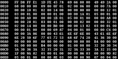

5.2.1.- Ficheros binarios y ficheros de texto (II).

Los ficheros binarios almacenan la información en bytes, codificada en binario, pudiendo ser de cualquier tipo: fotografías, números, letras, archivos ejecutables, etc.
Los archivos binarios guardan una representación de los datos en el fichero. O sea que, cuando se guarda texto no se guarda el texto en sí, sino que se guarda su representación en código UTF-8UTF-8Es un formato de codificación de caracteres Unicode usando símbolos de longitud variable..
Para leer datos de un fichero binario, Java proporciona la clase FileInputStream. Dicha clase trabaja con bytes que se leen desde el flujo asociado a un fichero. Aquí puedes ver un ejemplo comentado.
Leer de fichero binario con buffer. (3.00 KB)
Para escribir datos a un fichero binario, la clase nos permite usar un fichero para escritura de bytes en él, es la claseFileOutputStream. La filosofía es la misma que para la lectura de datos, pero ahora el flujo es en dirección contraria, desde la aplicación que hace de fuente de datos hasta el fichero, que los consume.
En el siguiente fichero PDF puedes ver un esquema de cómo utilizar buffer para optimizar la lectura de teclado desde consola, por medio de las envolturas, podemos usar métodos como readline(), de la clase BufferedReader, que envuelve a un objeto de la clase InputStreamReader.
Envolturas (pdf - 103.94 KB)
Autoevaluación
Señala si es verdadera o falsa la siguiente afirmación:
Retroalimentación
Falso
Se trata en efecto deFileInputStream.
Debes conocer
Tienes ejemplos de lectura y escritura de ficheros en Java, en el siguiente enlace:
Lectura y escritura de ficheros en Java, con ejemplos.
También te recomendamos que veas detenidamente estos dos vídeos, que explican con detalle el acceso a ficheros en Java.